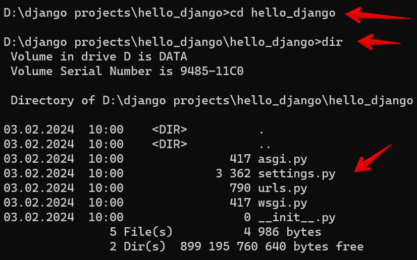

Първо Django приложение
Django е един от най-мощните и динамични уеб фреймворкове, а правилната основа ще ви помогне да изградите скалируемо и ефективно приложение. Вече знаете как да инсталирате Django, така че нека преминем директно към създаването на вашия проект.
1. Създаване на Django проект
След като сте се уверили, че Django е инсталиран, можете да създадете нов проект, като изпълните следната команда в терминала:
Заменете myproject с желаното име на вашия проект. Тази команда ще създаде нова директория със същото име, съдържаща няколко файла и подпапки. Това са основните компоненти на вашето Django приложение, включително конфигурационните файлове, настройките и маршрутите (URLs), които са необходими за стартирането на проекта.
Ако изпълните командата по-горе, няма да получите изход в терминала, но можете да проверите дали всичко е наред, като разгледате структурата на папката. За да направите това, навигирайте до създадената директория с:
След това изпълнете:

2. Структура на Django проект
След като стартирате нов Django проект, структурата на папките ще изглежда така:
myproject/
│── manage.py
│── myproject/
│ ├── __init__.py
│ ├── settings.py
│ ├── urls.py
│ ├── asgi.py
│ ├── wsgi.py
Ето кратко описание на основните файлове:
-
manage.py – Скрипт за управление на Django проекта. Позволява стартиране на сървъра, създаване на миграции, управление на базата данни и други.
-
init.py – Празен файл, който указва на Python, че тази директория е Python пакет.
-
settings.py – Основните настройки на проекта, включително конфигурацията на базата данни, инсталираните приложения и други.
-
urls.py – Файл, съдържащ маршрутизацията (URL конфигурацията) на вашия Django сайт.
-
asgi.py и wsgi.py – Служат като входни точки за ASGI- и WSGI-съвместими уеб сървъри, които ще стартират вашия проект в интернет.
3. Django development server – Какво представлява?
За тестване на Django проекти, Django разполага с вграден, лек уеб сървър, известен като development server (сървър за разработка).
Вграденият сървър на Django е инструмент, предназначен за разработка, който улеснява бързото тестване на Django проекти без да е необходимо да конфигурирате външен уеб сървър. Основните му характеристики са:
- Лек и лесен за използване – няма нужда от допълнителна настройка.
- Позволява незабавни тестове – стартира с една команда и веднага можете да преглеждате резултатите.
- Симулира поведението на продукционен сървър – но не трябва да се използва за реални уеб приложения, тъй като не осигурява достатъчна сигурност и мащабируемост.
Django уеб сървърът стартира автоматично, когато стартирате Django проект. В следващата секция ще научите как да направите това.
4. Стартиране на вашия Django проект
След като сте създали своя проект, е време да го стартирате. Навигирайте до директорията на вашия проект в терминала (там, където се намира manage.py) и изпълнете следната команда:
Тази команда ще стартира сървъра за разработка на вашия локален компютър.
След изпълнението ѝ, ще получите съобщение, което показва, че сървърът е стартиран успешно. Сега можете да отворите браузър и да посетите:
Ако всичко е наред, ще видите началната страница на Django, която потвърждава, че вашият проект работи успешно.
5. Спиране на сървъра
За да спрете сървъра, просто натиснете Ctrl + C в терминала, където стартирахте приложението.
6. Какво представлява адресът 127.0.0.1?
Адресът 127.0.0.1 е специален IP адрес, наречен loopback или localhost. Той означава, че компютърът комуникира със самия себе си, без да изпраща данни в интернет.
Портът 8000 е стандартният порт, който Django използва. Ако този порт е зает от друга програма, можете да стартирате сървъра на друг порт, например 8080:
Тази команда ще стартира сървъра, но на порт 8080.
7. Django и архитектурният модел MVT
За да разберете как работи Django, трябва да познавате неговата архитектурна структура, която следва Model-View-Template (MVT) модела. Това е разновидност на популярния Model-View-Controller (MVC) модел.
Каква е разликата между MVC и MVT?
В MVC (Model-View-Controller):
- Model – Представлява структурата на данните и логиката за работа с базата.
- View – Отговаря за визуализацията на данните (може да има няколко изгледа за един модел).
- Controller – Свързва Model и View, управлявайки бизнес логиката.
В MVT (Model-View-Template) на Django:
- Model – Отговаря за структурата на базата и обработката на данните.
- View – Работи като Controller, като обработва заявките, комуникира с моделите и връща отговори.
- Template – Представлява изгледа (View в MVC) – дефинира как ще се показват данните в HTML.
Django опростява процеса на разработка, като се абстрахира от Controller и комбинира функциите му в View. Това води до по-лесно и ясно разделение между данни, бизнес логика и представяне.